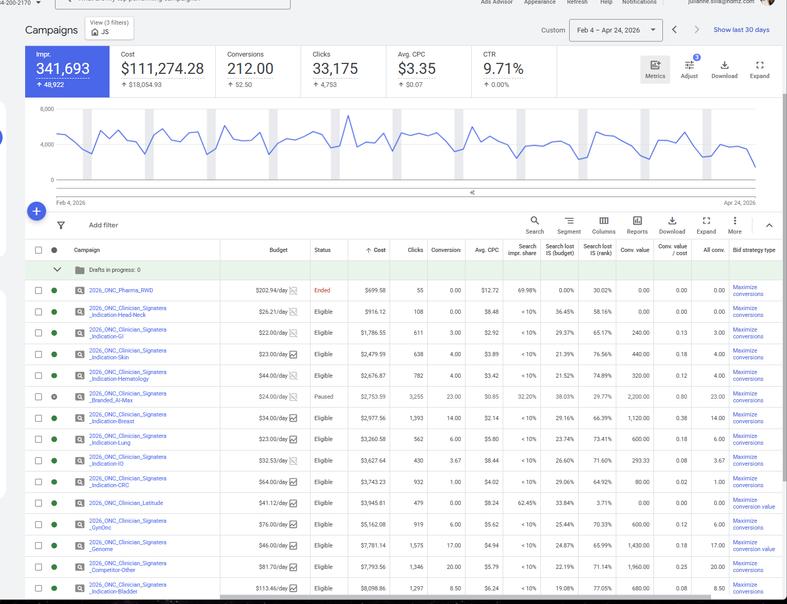

A full go-to-market build and high-ticket launch — from zero to sold out.

The client had a compelling offer and a loyal audience — but no infrastructure to monetize either. There was no dedicated program site, no email sequence built for conversion, and no way to track where leads were coming from or why they converted.
Every launch was one-off, improvised, and impossible to repeat. The goal: build a repeatable revenue engine from scratch — one that could fill seats predictably and compound over time.
Designed and built a conversion-optimized program site with dedicated landing pages per audience segment. Copy, structure, and hierarchy all calibrated for high-ticket intent.
Wrote every email in the launch cadence — nurture, open-cart, urgency, and close. Engineered for segmentation so messaging matched where each lead was in the funnel.
Implemented UTM governance, built a KPI tracking dashboard, and wired up source attribution from first touch to closed seat. No more guessing where buyers came from.
Set up behavioral automations for lead nurture, cart abandonment, and post-purchase onboarding. Every trigger had a purpose — reduce friction, increase conviction, advance the close.
From opt-in copy and social proof callouts to email templates and confirmation sequences — every touchpoint was built with the same strategic intent: remove doubt and move buyers forward.
Broad messaging that spoke to everyone and converted no one. One-off launches with no documentation, no repeatable process, and no data trail. Attribution was guesswork — there was no way to know which channel, which message, or which moment drove the close.
Tightened segment narratives with copy engineered per buyer profile. A repeatable launch architecture — documented, templated, and scalable. Full attribution from first-touch to enrolled seat, with a KPI dashboard to prove ROI on every campaign going forward.
Filled every seat — 100% conversion of high-ticket leads.Mindset Mastery — Full GTM Launch
◇* Figures are representative and reflect the scope and nature of work delivered.
◇Select work has been redacted or visually altered to honor confidentiality and NDAs.
Let's build your funnel, your launch system, and your revenue engine — from the ground up.
Let's work together →